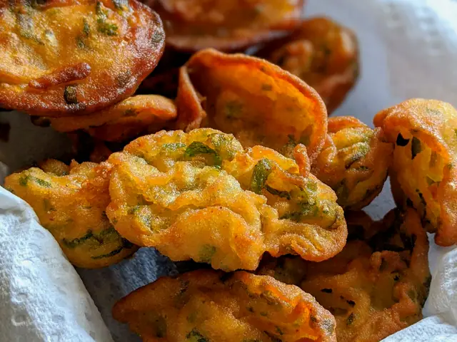
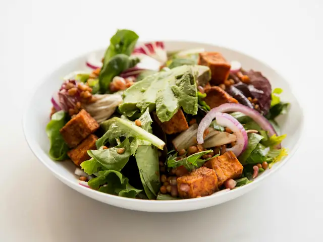

47 recipes
Festive Favourites
Dishes worth cooking for a crowd.
Pick one and start cooking.
01
Festive Favourites
47 recipes IndiaMediumDal MakhaniSabut urad aur rajma ki makkhan wali, dheemi aanch ki dal.70 minMediumServes 4
IndiaMediumDal MakhaniSabut urad aur rajma ki makkhan wali, dheemi aanch ki dal.70 minMediumServes 4 IndiaMediumPaneer ParathaMasaledaar kuthe paneer se bhara naram paratha.35 minSpicyServes 4
IndiaMediumPaneer ParathaMasaledaar kuthe paneer se bhara naram paratha.35 minSpicyServes 4 IndiaHardChole BhatureGehre masale ke chole aur phooli hui sunehri bhature.75 minMediumServes 4
IndiaHardChole BhatureGehre masale ke chole aur phooli hui sunehri bhature.75 minMediumServes 4 IndiaHardMalai KoftaAloo-paneer ke naram kofte, malaidar gravy mein.60 minMildServes 4
IndiaHardMalai KoftaAloo-paneer ke naram kofte, malaidar gravy mein.60 minMildServes 4
AustraliaMediumSavoury Lamington Bites, Cheese and HerbNaram, namkeen cake ke tukde, cheese aur herbs ki parat mein.45 minMildServes 4 IndiaMediumPalak PaneerMulayam paneer, chikni hari palak ki gravy mein.35 minMediumServes 4
IndiaMediumPalak PaneerMulayam paneer, chikni hari palak ki gravy mein.35 minMediumServes 4 IndiaEasyMatar PaneerHari matar aur paneer, tamatar-pyaaz ki chatpati gravy mein.35 minMediumServes 4
IndiaEasyMatar PaneerHari matar aur paneer, tamatar-pyaaz ki chatpati gravy mein.35 minMediumServes 4 IndiaMediumPaneer Tikka MasalaBhune hue tikka tukde, malaidar masaledaar gravy mein.45 minMediumServes 4
IndiaMediumPaneer Tikka MasalaBhune hue tikka tukde, malaidar masaledaar gravy mein.45 minMediumServes 4 IndiaMediumKadai PaneerShimla mirch aur paneer, taaze pise masale ke saath.30 minMediumServes 4
IndiaMediumKadai PaneerShimla mirch aur paneer, taaze pise masale ke saath.30 minMediumServes 4 IndiaMediumPaneer Butter MasalaMulayam paneer, tamatar aur makkhan ki reshmi gravy mein.35 minMediumServes 4
IndiaMediumPaneer Butter MasalaMulayam paneer, tamatar aur makkhan ki reshmi gravy mein.35 minMediumServes 4 IndiaHardVeg BiryaniKhushbu daar chawal aur masaledar sabziyon ki parat wali biryani.60 minMildServes 4
IndiaHardVeg BiryaniKhushbu daar chawal aur masaledar sabziyon ki parat wali biryani.60 minMildServes 4 IndiaMediumVegetable KormaDahi, nariyal aur kaju ki halki meethi malaidar korma.45 minMildServes 4
IndiaMediumVegetable KormaDahi, nariyal aur kaju ki halki meethi malaidar korma.45 minMildServes 4 IndiaMediumShahi PaneerKaju aur malai wali shahi, halki meethi gravy mein paneer.40 minMediumServes 4
IndiaMediumShahi PaneerKaju aur malai wali shahi, halki meethi gravy mein paneer.40 minMediumServes 4 IndiaEasyPaneer BhurjiMasaledaar, bhuna hua crumbled paneer, jaldi banne wala.25 minSpicyServes 4
IndiaEasyPaneer BhurjiMasaledaar, bhuna hua crumbled paneer, jaldi banne wala.25 minSpicyServes 4 IndiaMediumGajar ka HalwaDoodh mein dheemi aanch par pakki, ghee wali gaajar ki mithai.75 minMildServes 4
IndiaMediumGajar ka HalwaDoodh mein dheemi aanch par pakki, ghee wali gaajar ki mithai.75 minMildServes 4 IndiaMediumPinniDesi ghee, atte aur meve ke garam gole, sardiyon ki taakat.45 minMildServes 4
IndiaMediumPinniDesi ghee, atte aur meve ke garam gole, sardiyon ki taakat.45 minMildServes 4 IndiaEasyMeethe ChawalKesar aur ghee ke sunehre, meethe, khushbudaar chawal.45 minMildServes 4
IndiaEasyMeethe ChawalKesar aur ghee ke sunehre, meethe, khushbudaar chawal.45 minMildServes 4 IndiaEasyPunjabi LassiGaadhi dahi ki meethi, malai wali, mitti ke glass wali lassi.10 minMildServes 4
IndiaEasyPunjabi LassiGaadhi dahi ki meethi, malai wali, mitti ke glass wali lassi.10 minMildServes 4 IndiaHardPyaaz KachoriMasaledaar pyaaz bhari, khasta Jodhpuri kachori.60 minMediumServes 4
IndiaHardPyaaz KachoriMasaledaar pyaaz bhari, khasta Jodhpuri kachori.60 minMediumServes 4 IndiaHardMawa KachoriMeve aur khoye bhari, chaashni mein dooba meetha kachori.60 minMildServes 4
IndiaHardMawa KachoriMeve aur khoye bhari, chaashni mein dooba meetha kachori.60 minMildServes 4 IndiaHardGhevarJaali dar, chaashni aur rabdi se sajaya Teej ka mithai.75 minMildServes 4
IndiaHardGhevarJaali dar, chaashni aur rabdi se sajaya Teej ka mithai.75 minMildServes 4 IndiaMediumMalpuaDoodh aur saunf ke ghol ke, chaashni mein doobe meethe pancakes.40 minMildServes 4
IndiaMediumMalpuaDoodh aur saunf ke ghol ke, chaashni mein doobe meethe pancakes.40 minMildServes 4 IndiaHardMoong Dal HalwaDesi ghee mein bhuni moong dal ka shahi halwa.70 minMildServes 4
IndiaHardMoong Dal HalwaDesi ghee mein bhuni moong dal ka shahi halwa.70 minMildServes 4 IndiaMediumChurma LadooBaati ke churme se bane ghee aur gud ke ladoo.40 minMildServes 4
IndiaMediumChurma LadooBaati ke churme se bane ghee aur gud ke ladoo.40 minMildServes 4 IndiaHardBalushahiKhasta, chaashni mein dooba mithai ka donut.60 minMildServes 4
IndiaHardBalushahiKhasta, chaashni mein dooba mithai ka donut.60 minMildServes 4 IndiaMediumMishti DoiGud mein jami, mitti ke bartan wali meethi dahi.45 minMildServes 4
IndiaMediumMishti DoiGud mein jami, mitti ke bartan wali meethi dahi.45 minMildServes 4 IndiaHardRasgullaChhane ke gol, chaashni mein doobe spongy gole.60 minMildServes 4
IndiaHardRasgullaChhane ke gol, chaashni mein doobe spongy gole.60 minMildServes 4 IndiaMediumSandeshTaaze chhane aur cheeni ki naram Bengali mithai.30 minMildServes 4
IndiaMediumSandeshTaaze chhane aur cheeni ki naram Bengali mithai.30 minMildServes 4 IndiaEasyPayeshGobindobhog chawal aur khajoor gud ki Bengali kheer.45 minMildServes 4
IndiaEasyPayeshGobindobhog chawal aur khajoor gud ki Bengali kheer.45 minMildServes 4 IndiaHardFafda JalebiBesan ke kurkure fafda aur garam jalebi, Dussehra ki parampara.60 minMildServes 4
IndiaHardFafda JalebiBesan ke kurkure fafda aur garam jalebi, Dussehra ki parampara.60 minMildServes 4 IndiaEasyShrikhandChhane ki gaadhi dahi mein kesar aur elaichi, thanda dessert.15 minMildServes 4
IndiaEasyShrikhandChhane ki gaadhi dahi mein kesar aur elaichi, thanda dessert.15 minMildServes 4 IndiaMediumBasundiDoodh ko aadha pakaakar bani malaidaar rabdi jaisi mithai.60 minMildServes 4
IndiaMediumBasundiDoodh ko aadha pakaakar bani malaidaar rabdi jaisi mithai.60 minMildServes 4 IndiaMediumMohanthalBesan aur ghee ki dar-dari, elaichi wali barfi.50 minMildServes 4
IndiaMediumMohanthalBesan aur ghee ki dar-dari, elaichi wali barfi.50 minMildServes 4 IndiaHardPuran PoliChana dal aur gud ki bhari, ghee lagi meethi roti.75 minMildServes 4
IndiaHardPuran PoliChana dal aur gud ki bhari, ghee lagi meethi roti.75 minMildServes 4 IndiaHardUkadiche ModakChawal ke aate ke bhaap mein pake nariyal-gud bhare modak.50 minMildServes 4
IndiaHardUkadiche ModakChawal ke aate ke bhaap mein pake nariyal-gud bhare modak.50 minMildServes 4 IndiaEasySheeraGhee mein bhuni sooji aur kele ki meethi, narm mithai.25 minMildServes 4
IndiaEasySheeraGhee mein bhuni sooji aur kele ki meethi, narm mithai.25 minMildServes 4 IndiaEasyAamrasAam ke pulp ka thanda, doodh-elaichi wala garmiyon ka mithai.15 minMildServes 4
IndiaEasyAamrasAam ke pulp ka thanda, doodh-elaichi wala garmiyon ka mithai.15 minMildServes 4 IndiaEasySemiya PayasamSeviyan, doodh aur kaju-kishmish ki Kerala wali meethi.30 minMildServes 4
IndiaEasySemiya PayasamSeviyan, doodh aur kaju-kishmish ki Kerala wali meethi.30 minMildServes 4 IndiaHardMysore PakBesan aur bahut saare ghee ki melt-in-mouth mithai.40 minMildServes 4
IndiaHardMysore PakBesan aur bahut saare ghee ki melt-in-mouth mithai.40 minMildServes 4 IndiaMediumPani PuriFuli hui puri mein khatta-teekha pudine ka paani.40 minMildServes 4
IndiaMediumPani PuriFuli hui puri mein khatta-teekha pudine ka paani.40 minMildServes 4 IndiaEasyBhel PuriMurmura, sev, pyaaz aur chutney ki Mumbai wali chaat.15 minMildServes 4
IndiaEasyBhel PuriMurmura, sev, pyaaz aur chutney ki Mumbai wali chaat.15 minMildServes 4 IndiaEasySev PuriPapdi par aloo, chutney aur bareek sev ki chaat.20 minMildServes 4
IndiaEasySev PuriPapdi par aloo, chutney aur bareek sev ki chaat.20 minMildServes 4 IndiaHardRaj KachoriBade, khaste kachori mein dahi, aloo aur chutney ka bharaav.50 minMildServes 4
IndiaHardRaj KachoriBade, khaste kachori mein dahi, aloo aur chutney ka bharaav.50 minMildServes 4 IndiaMediumNavratan KormaNau rangon ki sabziyon aur mewe wali shahi korma.50 minMildServes 4
IndiaMediumNavratan KormaNau rangon ki sabziyon aur mewe wali shahi korma.50 minMildServes 4 IndiaHardAmritsari KulchaAloo-paneer bhara tandoori jaisa kulcha, chole ke saath.60 minMildServes 4
IndiaHardAmritsari KulchaAloo-paneer bhara tandoori jaisa kulcha, chole ke saath.60 minMildServes 4 IndiaHardGulab JamunGulab ki chashni mein doobe naram khoye ke gole.45 minMildServes 4
IndiaHardGulab JamunGulab ki chashni mein doobe naram khoye ke gole.45 minMildServes 4
AustraliaEasySweet Potato with Macadamia CrumbleBhuni shakarkandi, upar macadamia aur herbs ka karara chura.45 minMildServes 4